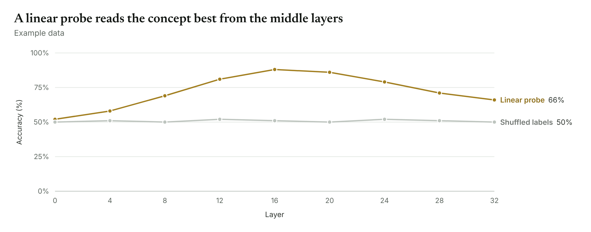

A tour of the publication template: how an article is laid out, how figures, notes and citations work, and what to keep in mind when publishing.
This page is written with the template it describes. Articles keep the authoring model of Distill: a single template.v2.js script, a JSON front matter block, and a handful of custom elements such as <d-cite> and <d-footnote>. What changes is the look, which now follows parallx.ai.
The header and footer are the website's own, with the wordmark, and the links to About and Join us. The title block takes a headline in the site's display serif and a short standfirst; the byline is built from the front matter.
Running text is set in Inter at 17.5 pixels with generous leading, headings in the bookish system serif the website uses, and links in a deep gold with a fine underline. Every colour comes from a token such as --plx-ink or --plx-gold, which articles can use in their own figures.
Quotations draw their gold rule level with the list bullets and indent their text like list items.
Charts made with plxviz share the palette of the page: gold for the condition a figure is about, grey for the control.

examples/probe_figure.py). Probing classifiersDiagrams drawn as inline SVG can use the colour tokens directly, so they always match the page: the strokes and fills of the figure below are all set with tokens such as --plx-gold.
Citations come from a BibTeX bibliography and appear as numbered references
Inline maths uses KaTeX, either with the <d-math> element, as in
Code blocks sit on a dark panel in the footer's ink, highlighted with the colours of the charts; inline code stays on a pale tint.
Tables use tabular figures and hairline rules.
| Layer | Probe accuracy | Shuffled labels | Selectivity |
|---|---|---|---|
| 8 | 69.0% | 50.0% | 19.0 |
| 16 | 88.0% | 51.0% | 37.0 |
| 24 | 79.0% | 52.0% | 27.0 |
Serve the contents of dist/ together: template.v2.js loads Inter from the fonts/ folder next to it, so no third-party font service is contacted. Beyond the usual title, description, date and authors, the front matter accepts a few optional keys:
url, the article's canonical address, used in the citation;journal, to cite the article under a name other than Parallax;githubPath, to invite corrections on GitHub, as this page does;license, to add a reuse notice to the appendix.This template adapts the Distill template by Shan Carter, Ludwig Schubert and contributors, under the Apache License 2.0. Inter is by Rasmus Andersson and the Inter Project Authors, under the SIL Open Font License.